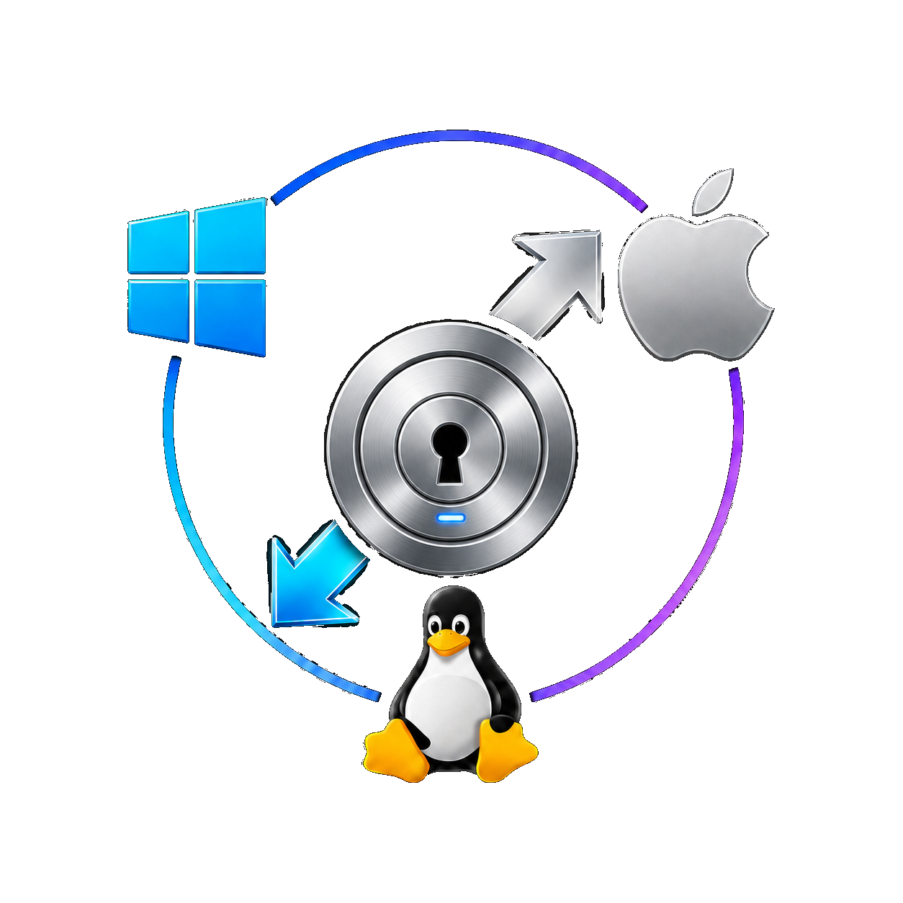

CrossSCP v1.0.2
Choose the package for your platform.
The best permanent download source is the GitHub Releases page. This page explains which release asset to pick for each operating system and architecture.

Recommended downloads
The links below target v1.0.2 and update automatically from the latest public GitHub Release when the GitHub API is available.
Release downloads: v1.0.2. Checking for the latest public release…
| Platform / architecture | Asset to download | Install command or note |
|---|---|---|
| macOS Apple Silicon / arm64 | CrossSCP-v1.0.2-macos-arm64.dmg | Recommended tester command:curl -fsSL https://github.com/pat229988/Cross-SCP/releases/download/v1.0.2/install-macos.sh | CROSSSCP_VERSION=v1.0.2 bash |
| Windows x64 | CrossSCP-v1.0.2-windows-x64-setup.exe CrossSCP-v1.0.2-windows-x64-portable.zip | Use setup EXE for normal install. Portable ZIP requires no installer. SmartScreen may warn until builds are Authenticode signed. |
| Fedora x86_64 | CrossSCP-v1.0.2-fedora-x86_64.rpm | sudo dnf install ./CrossSCP-v1.0.2-fedora-x86_64.rpm |
| Ubuntu / Debian amd64 | CrossSCP-v1.0.2-ubuntu-amd64.deb | sudo apt install ./CrossSCP-v1.0.2-ubuntu-amd64.deb |
| Linux Flatpak x86_64 | CrossSCP-v1.0.2-linux-x86_64.flatpak | flatpak install --user ./CrossSCP-v1.0.2-linux-x86_64.flatpak |
macOS one-line tester install
This is the easiest free macOS path while CrossSCP is unsigned/not notarized:
curl -fsSL https://github.com/pat229988/Cross-SCP/releases/download/v1.0.2/install-macos.sh | CROSSSCP_VERSION=v1.0.2 bashTrust and troubleshooting
Beta packages may show macOS Gatekeeper, Windows SmartScreen, or Linux unsigned package warnings. Read the install guide before distributing links to users.